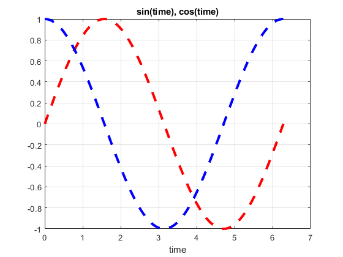
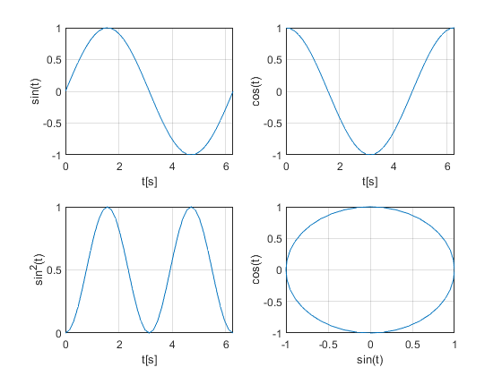

A=[1,2,3;
4 5 6
7 8 9]
B=[9,8,7;6 6 4; 3 2 1]
A/B
A*inv(B)
inv(A)*B
A\B
A.\B
x=[7 4 8 10 12]
length(x)
sum(x)
prod(x)
det(A)
size(A)
~A
A&B
A|B
xor(A,B)
sin(A)
cos(A)
log(A)
C=[1:3;2:4;3:5]
D=[1:2:5; 4:2:8]
E=[1:4;5:8;9:-1:6;5:-1:2]
E(1:2,2:3)
E(2,:)
E(1:3,2:4)
y=[[1 2 3] [4 5 6] 7]
B=[E [-1 -2 -3 -4]']
B=[E ;[-1 -2 -3 -4]]
v=(1:3)'
m=[v v.^3 3.^v]
zeros(2)
ones(3)
rand(2,3)
randn(3,2)
eye(1,2)
a=[1 2 3; 4 5 6]
reshape(a,3,2)
reshape(a,6,1)
for i=1:5
a(i)=1/i;
end
j=[1:1:5]
for i=j
a(i)=1/i;
end
a=[[1 2 3]' [-2 -4 -6]']
for i=a
i*i'
end
D={[1 2] [-1+2j,2+3j]}
for i=1:2
D{i}
end
i=1;
while i<=5
a(i)=1/i
i=i+1;
end
b=[4 5 6; 4+i 5+2i 0]
i=1;
while i<=3 && all(b(:, i))
b(:, i)
i=i+1;
end
test=-5;
if test>=0
'variabila e pozitiva'
else
'variabila este negativa'
end
x=linspace(0,2*pi,100)
y=cos(x)
plot(x,sin(x),'--r','Linewidth',3,'MarkerFaceColor', 'y','MarkerSize', 10)
hold on
plot(x,y,'--b','Linewidth',3,'MarkerFaceColor', 'b','MarkerSize', 10)
xlabel('time')
grid
title('sin(time), cos(time)')
figure(2)
t = 0:0.01:4*pi;
x = sin(t) ./ t;
plot(t, x)
grid
xlabel('\bft[s]')
texstr = '$\frac{sin(t)}{t}$';
text('string',texstr, 'interpreter', 'latex', 'fontsize',40,...
'units','norm', 'pos',[.5 .5]);
t = 0: pi/20: 2*pi;
x = sin(t);
y = cos(t);
z = x .* x;
subplot(2, 2, 1)
plot(t, x)
grid
xlabel('t[s]')
ylabel('sin(t)')
subplot(2, 2, 2)
plot(t, y)
grid
xlabel('t[s]')
ylabel('cos(t)')
subplot(2, 2, 3)
plot(t, z)
grid
xlabel('t[s]')
ylabel('sin^2(t)')
subplot(2, 2, 4)
plot(x, y)
grid
xlabel('sin(t)')
ylabel('cos(t)')
A =
1 2 3
4 5 6
7 8 9
B =
9 8 7
6 6 4
3 2 1
ans =
0.6667 0.0000 -1.6667
1.1667 0.0000 -2.1667
1.6667 0.0000 -2.6667
ans =
0.6667 -0.0000 -1.6667
1.1667 -0.0000 -2.1667
1.6667 -0.0000 -2.6667
Warning: Matrix is close to singular or badly scaled. Results may be inaccurate.
RCOND = 2.202823e-18.
ans =
1.0e+16 *
-0.0000 -0.6305 0.0000
-0.0000 1.2610 -0.0000
0.0000 -0.6305 0.0000
Warning: Matrix is close to singular or badly scaled. Results may be inaccurate.
RCOND = 2.202823e-18.
ans =
1.0e+16 *
0.0000 -0.6305 -0.0000
-0.0000 1.2610 -0.0000
0.0000 -0.6305 0.0000
ans =
9.0000 4.0000 2.3333
1.5000 1.2000 0.6667
0.4286 0.2500 0.1111
x =
7 4 8 10 12
ans =
5
ans =
41
ans =
26880
ans =
-9.5162e-16
ans =
3 3
ans =
3×3 logical array
0 0 0
0 0 0
0 0 0
ans =
3×3 logical array
1 1 1
1 1 1
1 1 1
ans =
3×3 logical array
1 1 1
1 1 1
1 1 1
ans =
3×3 logical array
0 0 0
0 0 0
0 0 0
ans =
0.8415 0.9093 0.1411
-0.7568 -0.9589 -0.2794
0.6570 0.9894 0.4121
ans =
0.5403 -0.4161 -0.9900
-0.6536 0.2837 0.9602
0.7539 -0.1455 -0.9111
ans =
0 0.6931 1.0986
1.3863 1.6094 1.7918
1.9459 2.0794 2.1972
C =
1 2 3
2 3 4
3 4 5
D =
1 3 5
4 6 8
E =
1 2 3 4
5 6 7 8
9 8 7 6
5 4 3 2
ans =
2 3
6 7
ans =
5 6 7 8
ans =
2 3 4
6 7 8
8 7 6
y =
1 2 3 4 5 6 7
B =
1 2 3 4 -1
5 6 7 8 -2
9 8 7 6 -3
5 4 3 2 -4
B =
1 2 3 4
5 6 7 8
9 8 7 6
5 4 3 2
-1 -2 -3 -4
v =
1
2
3
m =
1 1 3
2 8 9
3 27 27
ans =
0 0
0 0
ans =
1 1 1
1 1 1
1 1 1
ans =
0.0908 0.1537 0.4401
0.2665 0.2810 0.5271
ans =
-0.0638 1.8140
0.6113 0.3120
0.1093 1.8045
ans =
1 0
a =
1 2 3
4 5 6
ans =
1 5
4 3
2 6
ans =
1
4
2
5
3
6
j =
1 2 3 4 5
a =
1 -2
2 -4
3 -6
ans =
1 2 3
2 4 6
3 6 9
ans =
4 8 12
8 16 24
12 24 36
D =
1×2 cell array
{1×2 double} {1×2 double}
ans =
1 2
ans =
-1.0000 + 2.0000i 2.0000 + 3.0000i
a =
1 -2
2 -4
3 -6
a =
1.0000 -2.0000
0.5000 -4.0000
3.0000 -6.0000
a =
1.0000 -2.0000
0.5000 -4.0000
0.3333 -6.0000
a =
1.0000 0.2500
0.5000 -4.0000
0.3333 -6.0000
a =
1.0000 0.2500
0.5000 0.2000
0.3333 -6.0000
b =
4.0000 + 0.0000i 5.0000 + 0.0000i 6.0000 + 0.0000i
10.0000 + 0.0000i 5.0000 + 2.0000i 0.0000 + 0.0000i
ans =
4
10
ans =
5.0000 + 0.0000i
5.0000 + 2.0000i
ans =
'variabila este negativa'
x =
Columns 1 through 7
0 0.0635 0.1269 0.1904 0.2539 0.3173 0.3808
Columns 8 through 14
0.4443 0.5077 0.5712 0.6347 0.6981 0.7616 0.8251
Columns 15 through 21
0.8885 0.9520 1.0155 1.0789 1.1424 1.2059 1.2693
Columns 22 through 28
1.3328 1.3963 1.4597 1.5232 1.5867 1.6501 1.7136
Columns 29 through 35
1.7771 1.8405 1.9040 1.9675 2.0309 2.0944 2.1579
Columns 36 through 42
2.2213 2.2848 2.3483 2.4117 2.4752 2.5387 2.6021
Columns 43 through 49
2.6656 2.7291 2.7925 2.8560 2.9195 2.9829 3.0464
Columns 50 through 56
3.1099 3.1733 3.2368 3.3003 3.3637 3.4272 3.4907
Columns 57 through 63
3.5541 3.6176 3.6811 3.7445 3.8080 3.8715 3.9349
Columns 64 through 70
3.9984 4.0619 4.1253 4.1888 4.2523 4.3157 4.3792
Columns 71 through 77
4.4427 4.5061 4.5696 4.6331 4.6965 4.7600 4.8235
Columns 78 through 84
4.8869 4.9504 5.0139 5.0773 5.1408 5.2043 5.2677
Columns 85 through 91
5.3312 5.3947 5.4581 5.5216 5.5851 5.6485 5.7120
Columns 92 through 98
5.7755 5.8389 5.9024 5.9659 6.0293 6.0928 6.1563
Columns 99 through 100
6.2197 6.2832
y =
Columns 1 through 7
1.0000 0.9980 0.9920 0.9819 0.9679 0.9501 0.9284
Columns 8 through 14
0.9029 0.8738 0.8413 0.8053 0.7660 0.7237 0.6785
Columns 15 through 21
0.6306 0.5801 0.5272 0.4723 0.4154 0.3569 0.2969
Columns 22 through 28
0.2358 0.1736 0.1108 0.0476 -0.0159 -0.0792 -0.1423
Columns 29 through 35
-0.2048 -0.2665 -0.3271 -0.3863 -0.4441 -0.5000 -0.5539
Columns 36 through 42
-0.6056 -0.6549 -0.7015 -0.7453 -0.7861 -0.8237 -0.8580
Columns 43 through 49
-0.8888 -0.9161 -0.9397 -0.9595 -0.9754 -0.9874 -0.9955
Columns 50 through 56
-0.9995 -0.9995 -0.9955 -0.9874 -0.9754 -0.9595 -0.9397
Columns 57 through 63
-0.9161 -0.8888 -0.8580 -0.8237 -0.7861 -0.7453 -0.7015
Columns 64 through 70
-0.6549 -0.6056 -0.5539 -0.5000 -0.4441 -0.3863 -0.3271
Columns 71 through 77
-0.2665 -0.2048 -0.1423 -0.0792 -0.0159 0.0476 0.1108
Columns 78 through 84
0.1736 0.2358 0.2969 0.3569 0.4154 0.4723 0.5272
Columns 85 through 91
0.5801 0.6306 0.6785 0.7237 0.7660 0.8053 0.8413
Columns 92 through 98
0.8738 0.9029 0.9284 0.9501 0.9679 0.9819 0.9920
Columns 99 through 100
0.9980 1.0000
 